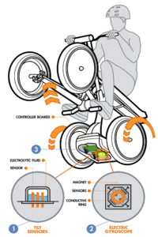
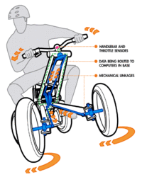
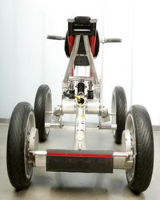
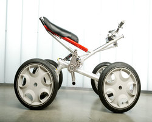

Like the mythical half-horse, half-man of Greek lore, Concept Centaur combines the best of several technologies to create an innovative whole. The result of exploration by Segway Inc.'s product development team, Concept Centaur will challenge the way you think about four-wheeled transportation. From time to time Segway's product development team devotes days, or even weeks, to creating new product concepts with the goal of finding a prince among frogs. It's a product exploration process they call "frog kissing." During this time, engineers and designers are encouraged to use any available materials in a very short time frame to prove a concept will work.
The product development team demonstrated that Concept Centaur was a princeóa concept that passed this initial feasibility test, but is not yet ready to become a product. Concept Centaur demonstrates Segway's continued commitment to breakthrough innovation and the innumerable possibilities for the future of personal transportation.
WHAT IS THE CENTAUR?
Concept Centaur combines proprietary dynamic stabilization technology with advanced propulsion and suspension systems, and an intuitive user interface to create a unique four-wheel device that is easily controllable on two or four wheels. Its full suspension and aggressive rider positioning provide an exhilarating ride for one or two people while maintaining control over a variety of terrain. Its rugged performance, zero emissions, and quiet operation make it a good low-impact way to explore the world. Its power and versatility make it suitable for a variety of indoor and outdoor recreational and commercial applications.
Configurations

Intuitive User Controls
Thumbs forward: The Centaur's forward and backward propulsion is easily controlled by pushing a thumb throttle located on the underside of the right-hand handlebar.
Pop a wheelie: The Centaur uses dynamic stabilization technology to limit and/or maintain the angle at which the rider experiences the device. What would normally be a dangerous maneuver on a motorcycle or ATV becomes safe and controlled on the Centaur. In addition, the rider can position his/her body in three different ways, which makes for a fun ride. This technology also allows for a high-performance design with a short, compact wheelbase - a combination that traditionally can be very difficult to control.
Lean forward, go forward: If you've haven't yet experienced the Segway PT, now is the time. If you have, you know what we mean by intuitive controls. Concept Centaur uses dynamic stabilization in a similar way. When on two wheels, the Centaur is controlled by how the rider shifts his or her weight. To go forward, lean forward. To go back, lean back.

Simultaneous mechanical and drive-by-wire steering:
Smart steering: The front two wheels turn left and right mechanically, which is made possible by an innovative linkage system designed by Segway engineers. The Centaur's advanced controls software also allows the rear wheels to turn at different rates in response to data received from the rider's steering direction. When on two wheels, steering is accomplished in the same manner, by turning the handlebar.
Sensors in the vertical portion of the steering column monitor the rider's input and sends a signal to the controller boards, which then issue a command to drive either or both of the rear wheels.
Turning rate is coordinated so that even with the wheels off the ground, Centaur follows the path defined by the front wheel angles. This allows smooth transitions between two-wheel and four-wheel operation.

Environmentally friendly:
No exhaust: Batteries power the Centaur, so there are no emissions during operation. In addition, the Centaur uses regenerative braking, which means the batteries are recharged during deceleration and hill descents.
Quiet: Electric motors and an innovative gearbox design result in a quiet ride.
Low-impact tires: The Centaur prototypes use the same non-marking silica-based tires as the Segway PTs'. These tires are smooth, which allows the rider to perform exciting maneuvers while having little impact on the terrain.

Distinctive design, elegant suspension:
A profile X-shape: The profile of the Centaur creates an "X." Right after the Centaur was crowned a prince by the engineers, they quickly pulled in Segway's industrial design team to integrate their vision into the product's form and function. What resulted is a concept with a sleek minimalist design that elegantly showcases the rider, leaving the simple mechanical elegance of the underlying design visible.
Three shocks: There are three shocks on the Centaur that absorb bumps and help the wheels maintain contact with the ground. There is one in each front "arm" and one in the rear.
Lightweight: Concept Centaur only weighs about 150 pounds and can be easily transported in the back of a large SUV or small pick-up truck. If developed, its light weight would allow for transport on the back of small cars through a hitch-mounted rack, similar to that used for carrying bicycles.
Frequently Asked Questions
How fast does it go? Concept Centaur prototypes have gone just over 20 miles per hour. If Concept Centaur were to be manufactured in the future, more testing would be required to determine the appropriate top speed.
How much does it cost? Since Concept Centaur is just thatóa conceptóthey aren't for sale. At the present time, Segway Inc. has no plans to manufacture or sell this as a product.
When will it be available? At present time, Segway Inc. has no plans to manufacture the Centaur. All new Segway products will be posted to our website as they are released. If you'd like, you may send an e-mail to sgthompson@ualr.edu and include your name, address, and phone number to be notified of any additional information on Concept Centaur. This address is not monitored by a person, so please do not send any other requests here.
About Segway
Segway is passionately devoted to moving you- easily, efficiently, intelligently simple. The company's first product, the SegwayÆ Personal Transporter (PT), was the first two-wheeled, self-balancing, electric transportation device to use our patented dynamic stabilization technology.
Today, Segway is focused on serving our customers by developing safe, unique products that are redefining personal transportation for consumers and businesses. †Segway works with commercial and municipal organizations to realize the benefits of zero-emission personal transportation that increase productivity and utilize existing infrastructure.
Together with our customers, we help government leaders create the framework to adopt these new technologies and safely and wisely integrate them into society. For our investors and dealers, we create successful new business opportunities with an exciting roadmap to the future.
We continue to focus our research and development efforts on creating versatile, agile, short-range devices that utilize the patented dynamic stabilization technology and advanced alternative-power systems. We strive to make every product we build as exhilarating as our flagship product, the Segway PT, in order to excite and keep people on the move.